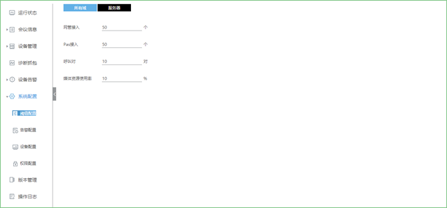
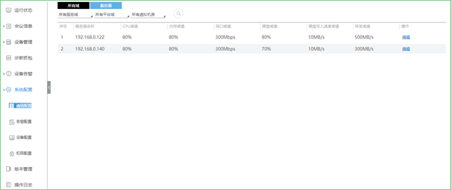
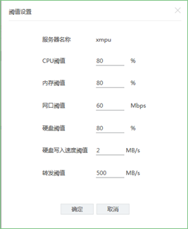

阈值设置是指设置一定的参考值，如果系统超过这些参考值，将进行告警。
所有域
具体操作方法如下：
1. 进入系统配置界面的阈值配置页，选择所有域；

2. 填写参考值，按Enter回车键；
3. 弹出设置成功提示框；
4. 按照第2~4步骤，填写其他参考值。
服务器
1. 进入系统配置界面的阈值配置页，选择服务器界面；

2. 选择服务域，平台域，虚拟机房，点击 ，开始查询；
，开始查询；
3. 点击服务器右侧的编辑，可以编辑服务器的CPU阈值，内存阈值，网口阈值，硬盘阈值，硬盘写入速度阈值以及转发阈值；

4. 点击【确定】。